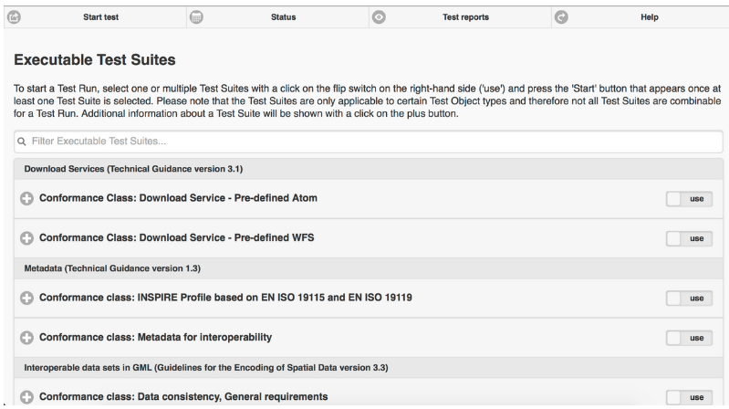
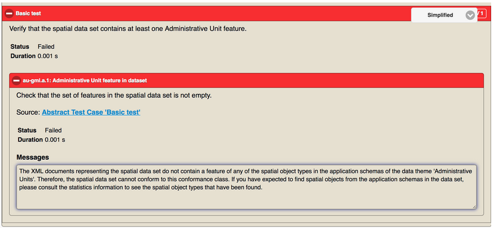
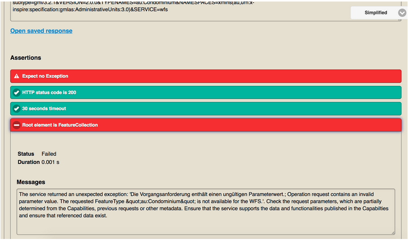

ETF gyorstalpaló¶
Megjegyzés
Ez a projekt csak az OSGeoLive virtuális gépben (VMDK) található meg
Az ETF egy nyílt forráskódú tesztelési keretrendszer a téradatok, metaadatok és webszolgáltatások érvényesítésére a téradat-infrastruktúrákban (SDI). Az ETF tervezését három cél vezérelte: legyen felhasználóbarát, konzisztens a szabványokkal, és képes legyen tesztelni az összes erőforrást az SDI-ben.
Ez a gyorstalpaló leírja:
navigáció a web alkalmazáson keresztül
egy teszt indítása
egy teszt futásának monitorozása
teszt jelentések megtekintése és kezelése
Tartalom
Bevezetés¶
A Start menüből válassza a -t. Az alkalmazás néhány pillanat múlva elindul és megnyitja a http://localhost:9090/ETF web lapot
A fejlécben négy menüfejezet van, mindegyik különböző nézeteket és funkcionalitást reprezentál:

Az első a Start test. Ebben a fejezetben az összes elérhető (értsd telepített) végrehajtható tesztkészlet listája látható. Ebben a fejezetben egy végrehajtható tesztkészlet választható ki és futtatható a teszt objektumon.
A második a Status. Ez az összes, a rendszeren aktuálisan futó tesztet mutatja meg és lehetővé teszi egy monitor nézet megnyitását egyetlen teszt futtatáshoz a teszt állapotának ellenőrzésére. Továbbá az aktuálisan betöltött komponensek jelennek meg a futó tesztek alatt.
A harmadik a Test reports. Ebben bármelyik befejezett teszt eredménye részletesen ellenőrizhető, elemezhető vagy letölthető.
A negyedik a Help. Ez egy link a dokumentációhoz. Ebben útmutatók találhatók az ETF összes funkciójának használatához.
Teszt indítás¶
Teszt készlet kiválasztás¶
A megjelenő nézet az elérhető végrehajtható tesztkészleteket mutatja.
Egy tesztkészletről további információ kapható a „+” gombra kattintva.

Ezt az információt:
Tartalmazza a tesztkészlet leírását.
Tartalmazhat egy hivatkozást az absztrakt tesztkészletre, amelyből a végrehajtható tesztkészlet származik (forrás).
Tartalmazhatja a tesztkészlet függőségeket, amelyek automatikusan végrehajtásra kerülnek a tesztcsomaggal együtt egy tesztfutás során (Pre-requisite conformance classes).
Tartalmazhatja a társított címkék nevét, amelyek a tesztcsomagok csoportosítására szolgálnak a nézetben.
Tartalmazza az alkalmazható tesztobjektum-típusok nevét (magyarázat a következő részben).
Általános információkat tartalmaz, például a verziót, a szerzőt és az utolsó módosítót, a létrehozási és módosítási dátumát.
Egy teszt futtatásához egy tesztcsomagot ki kell választani a „use”-ra kattintva a kapcsoló a jobb oldalra vált.

A „Start” gomb megjelenik, ha legalább egy tesztcsomagot kiválasztott.
Egy tesztcsomag csak bizonyos teszt objektum típusokra alkalmazható, melyek listája a leírásban található. Több tesztcsomag választható egy teszt futtatáshoz, de ugyanarra a teszt objektum típusra alkalmazhatónak kell lennie. Miután egy testcsomagot kiválasztott a többi más teszt objektum típusra vonatkozó tesztcsomag váltókapcsolóját letiltja a rendszer.

Egy tesztcsomag más tesztcsomagoktól függhet. A függőségek szintén megjelennek a tesztcsomag leírásában. Ezeket a függőségeket automatikusan lefutnak a teszt futtatása közben.
A „Start” gombra kattintás egy új nézetet nyit meg, mely megkérdezi a felhasználótól a tesztelendő erőforrást.
Teszt futtatási konfiguráció¶

A „Label” mező kötelező és automatikus alapbeállítása az aktuális idő és a szelektált tesztcsomagok neve. A címke megjelenik a Test reports fejezetben és módosítható, annak érdekében, hogy egy tesztfutás után újra megtalálhassa a jelentést.
A nézet stílusa függhet a kiválasztott tesztcsomagoktól.
Fájl-alapú tesztek¶
A következő elemek jelennek meg, ha olyan tesztcsomagokat választottak ki, amelyek egy vagy több adatfájlt tesztelnek.
Ha a File upload-ot választották ki, Adatforrásként, egy vagy több helyi fájl kiválasztható és feltölthető az ETF-be. Az ETF csak XML és GML kiterjesztésű fájlokat, valamint e két fájltípust tartalmazó ZIP fájlokat fogadja el.
Megjegyzés
Más fájlok, például sémadefiníciós fájlok, nem használhatók, és az ETF üzenet nélkül figyelmen kívül hagyja őket!

A maximális feltölthető fájlméret akkor jelenik meg, ha az egeret a kérdőjel fölé mozgatja.
Ha a tesztelendő adatok a weben érhetők el, akkor egyetlen URL megadásával tesztelhetők. Miután a Remote file (URL)-t választotta ki Adatforrásként, egyetlen XML, GML vagy ZIP fájl Remote URL-je is megadható.

Ha az URL hitelesítést igényel, a felhasználónevet és a jelszót a Credentials-ra kattintva adhatja meg.

Szolgáltatás tesztek¶
A következő elemek jelennek meg amikor olyan tesztcsomagot választott, mely egy szolgáltatást tesztel.
A szolgáltatás URL.t kell megadni, mely http:// vagy https:// résszel kezdődik.

Ha a szolgáltatás hitelesítést igényel, a felhasználónevet és a jelszót a Credentials-ra kattintva adhatja meg.
Függőségek és paraméterek¶
A Test Suites gomb néhány alap információt jelenít meg a kiválasztott tesztkészletekről és - ha alkalmazható - a közvetlen függőségekről.

Ha a teszt paramétereket vár, azok a Test Suite Parameters részben jelennek meg. Az opcionális paraméterek az Optional Parameters gombra kattintva jelennek meg. A paraméterek leírása az egeret a kérdőjelre mozgatva jelennek meg.
Megjegyzés
A legtöbb esetben az előre beállított alapértelmezett értékeke használhatók.

Végül a test a Start gombra kattintva indítható el. Ezután a nézet automatikusan átvált a Monitor Test Run nézetre.
Test futások monitorozása¶
Egy teszt futtatás elindítása után a Monitor Test Run nézet jelenik meg.

A kék oszlop jelzi az előrehaladást.

A konzol terület információs és eredmény üzeneteket jelenít meg. A teszt futtatás megszakítható a Cancel gombra kattintva.
A nézet bezárható például az X gombbal az bal felső sarokban. A böngésző bezárásakor is folytatódik a tesztfutás a szerveren.
A Monitor Test Run nézet bezárása utáni újranyitásához válassza ki a menüsorban a Status részt. Az Status szakasz az összes futó tesztet mutatja. A Test Run gombra kattintva megnyílik az adott tesztfutás Monitor Test Run nézete.

Amikor egy teszt futtatás befejeződik, és a Monitor Test Run nézet megnyílik, a teszt jelentés automatikusan megjelenik.
Teszt Jelentések¶
A Test Reports rész az összes jelentést megjeleníti, melyeket a teszt futtatás során generált a rendszer.

A + gombra kattintva megjelennek a teszt futtatás információk, az indítás időpontja, az eredmény állapot, a teszt objektum neve és a használt tesztkészlet.
A teszt jelentés megnyitható újra az Open report gombra kattintva vagy HTML fájlként letölthető a Download report gombra kattintva.
A teszt futtatás napló fájlja megtekinthető az Open log gombbal. A Delete report gombra kattintva a jelentés véglegesen törölhető.
Teszt jelentések vizsgálata¶
A tesztjelentés tetején általános információk jelennek meg, beleértve a teszteredmények általános állapotát, a kezdési időpontot, az időtartamot és egy táblázatot, amely több szinten összegzi az összes teszt állapotát.

A teszt jelentések interaktívak. A Show* kapcsoló használható az Only failed vagy Only manual tesztek szűrésére. Az All opció kikapcsolja a szűrőt.
A Level of detail kapcsoló használható több vagy kevesebb információ megjelenítésére a jelentésből.

A jelentésben a teszt eredményeket hierarchikusan összegzik. A legfelső szinten a tesztkészletek vannak.
Ha rákattint egy tesztcsomagra, megjelenik a leírás és az összes alacsonyabb szintű teszt az adott tesztcsomagban. A hibák tesztcsomagban azonnal felismerhetők a piros színről. A sikertelen tesztek száma a jobb felső sarokban látható.

A zöld szín a sikeres tesztet jelzi. Azok a sikeres tesztek, amelyek további manuális tesztlépéseket igényelnek, amelyeket nem lehetett automatizálni, narancssárga színűek. A narancssárga szín egy olyan tesztet is jelezhet, amelyet kihagytak, mert egy másik teszttől függ, amely sikertelen volt. A pontos állapot a leírás alatt található.
A szintek száma a tesztelt teszt objektumtól függ. Ha szolgáltatás tesztet hajtott végre, a hierarchia a következő:
Végrehajtható tesztcsomagok
Tesztmodulok (tesztesetek összessége)
Tesztesetek (tesztlépések összessége)
Tesztlépések (interakciók a szolgáltatással, teszt kifejezések)
Teszt kifejezések (atomikus tesztek)
Fájl alapú teszt esetén nincsenek Tesztmodulok és Tesztlépések és nem jelennek meg a jelentésben.
Minden teszt felsorolja a követelményeket, és leírást ad a tesztelés módjáról. A teszt tartalmazhat egy hivatkozást egy Abstract Test Suite-ra, amelyből a teszt származik (Source).

Az assertion-ok a legalacsonyabb szintű atomi tesztlekérdezéseket jelentik. Az elbukott, piros színű assertion-ok a Message részben egy hibaüzenetet jelenítenek meg.
Hasznos információk találhatók a következő magasabb szinten is, mint például egy szolgáltatás válasza a tesztlépés szintjén (figyelje meg a Open saved response hivatkozást a jelentésben).
Források¶
A fenti utasításokat követve az alábbiakban találhat egy előre meghatározott forráskészletet, amelyet tesztelhet az ETF-ben:
GML adathalmazok: néhány előkészített adathalmaz letölthető innen.
WMS szolgáltatások: a szolgáltatások egy listája elérhető itt.
WFS szolgáltatások: a szolgáltatások egy listája elérhető itt.
Megjegyzés
A fent megadott GML-adatkészletek némelyike nem megy át az összes teszten, ezért megpróbálhatja kijavítani őket (a tesztjelentésben közölt hibák alapján), mielőtt újra érvényesítené őket, amíg minden teszt sikeres lesz.
What next?¶
Ez csak egy rövid áttekintés volt az ETF-ről. További információ tartalmaz a demó telepítés és az ETF GitHub space.
Kérjük ellenőrizze még: